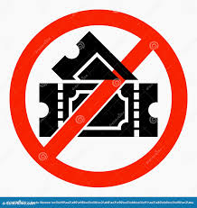

Resturants

Ticket Booking
Hotels

Location

The Basilica of Our Lady of Lanka is one of the most important Catholic shrines in Sri Lanka. It is located in Tewatta, Ragama, near Colombo, and is dedicated to the Virgin Mary under the title “Our Lady of Lanka.” The basilica holds deep historical and spiritual significance for Sri Lankan Catholics.
The origin of the shrine dates back to World War II, when Archbishop Jean-Marie Masson vowed to build a national shrine and consecrate Sri Lanka to the Blessed Virgin Mary if the country was protected from the horrors of war. After the war ended without major destruction to the island, the vow was fulfilled. The church was officially declared a basilica by Pope Pius XII in 1954.
The architecture of the basilica blends traditional Sri Lankan and European styles, creating a calm and devotional atmosphere. The statue of Our Lady of Lanka is the focal point of worship, symbolizing peace, protection, and maternal love.
Today, the Basilica of Our Lady of Lanka is a major pilgrimage center, especially during Marian feast days. Devotees from all parts of the country visit to pray, seek blessings, and express gratitude, making it a symbol of faith, unity, and hope.